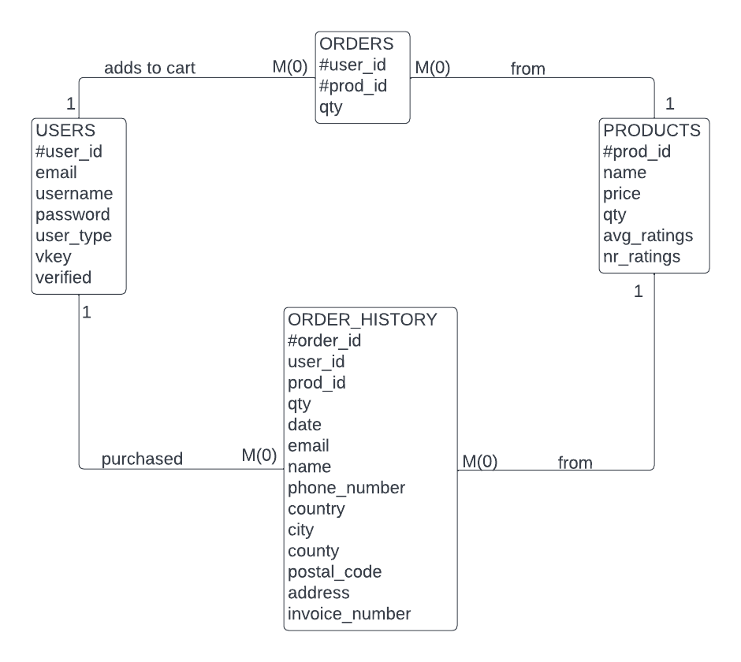

Aplicatie web - magazin online cu hrana pentru animale.
Domain name - denistroaca.tk
Hosting - 000webhost
SSL - Cloudflare
Roluri, entitati si procese specifice aplicatiei - Aplicatia va arata o lista cu diferite produse, afisand pentru fiecare numele, pretul, o imagine cu produsul, rating-ul, numarul de rating-uri si optiunile de a lasa un rating sau de a il adauga in cos. Aceste optiuni necesita ca cel ce foloseste aplicatia sa aiba un cont de utilizator si sa fie logat. Daca un produs nu se afla in stoc, atunci cand se trece cu mouse-ul deasupra butonului de adaugare in cos, acesta o sa afiseze "indisponibil". Aplicatie o sa aiba si optiunile de creare a unui cont, de autentificare si de vizualizare a cosului. Daca adaugam in cos produse deja existente in acesta, se va modifica cantitatea produsului. In cos avem optiunile de eliminare a unui produs sau de finalizare a comenzii. Cand selectam finalizarea comenzii, aplicatia verifica daca produsele din cos nu au disparut din stoc de cand au fost adaugate in cos. Daca toate produsele sunt disponibile, aplicatia goleste cosul de cumparaturi si scade cantitatiile cumparate din cantitatiile din stoc.
Baza de date - are urmatoatere entitati:
orders pastreaza toate produsele din toate cosurile, iar atunci cand o comanda este finalizata, sunt eliminate produele din ORDERS cu id-ul acelui client si adaugate in ORDER_HISTORY
